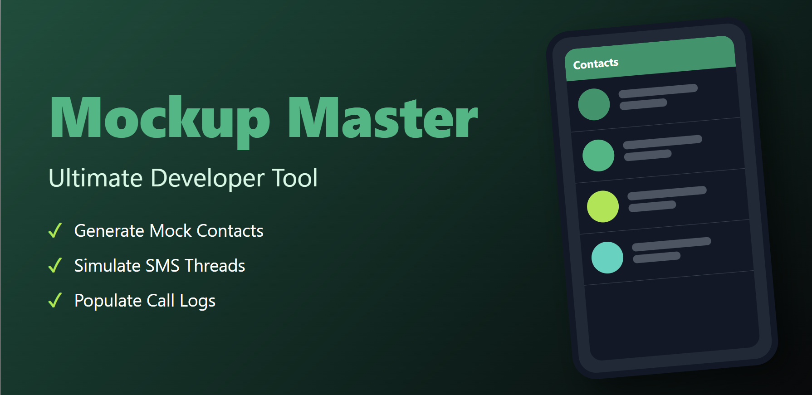

Mockup Master
The ultimate developer utility for Android. Instantly populate any emulator or physical device with realistic, high-quality mock data including Contacts, SMS threads, and Call Logs.
Developer Superpowers
Build better, test faster, and stress-test your UI with ease.
Contact Injection
Bulk create contacts with full names, multiple phone numbers, emails, and placeholder avatars. Perfect for testing contact lists and search logic.
SMS Simulation
Create entire conversation histories between different numbers. Supports Sent, Received, Draft statuses and even MMS simulation.
Call Log Factory
Generate Incoming, Outgoing, and Missed call entries with randomized durations to simulate years of device usage in seconds.
One-Tap Cleanup
Safe, surgical wipe of all mock data. Tracks every entry it creates so your personal or other test data remains completely untouched.
Developer User Guide
Set up your testing environment in four simple steps.
Grant Data Access
Launch the app and grant permissions for Contacts, SMS, and Call Logs. To mock SMS data, you must temporarily set Mockup Master as your default SMS app.
Configure Datasets
Choose the quantity of entries (10, 50, 100+) and select presets like "Corporate" or "Social" to tailor the data to your app's specific needs.
Generate & Test
Hit "Generate". Watch as your system databases populate in real-time. Now, switch back to your own app to see how it handles the load.
Export & Share
Save your mock scenarios as JSON or CSV files to share with your QA team for consistent testing across multiple emulators.